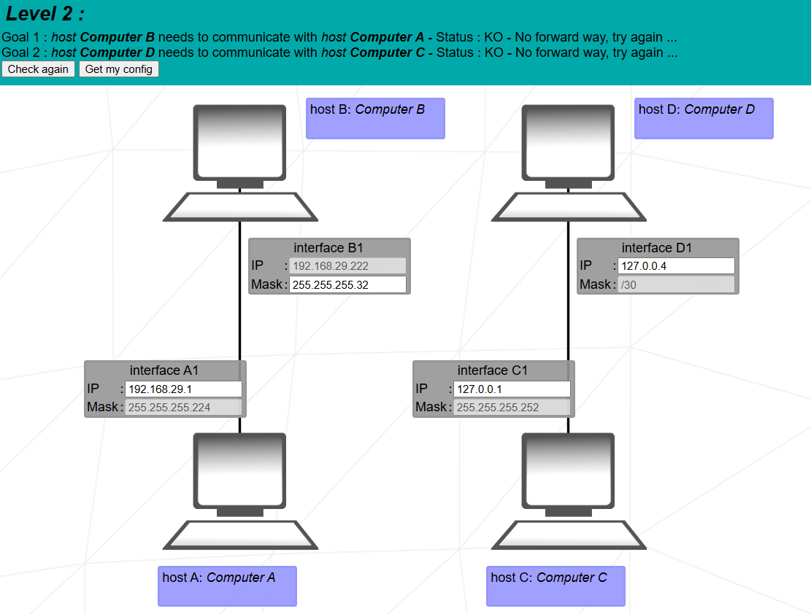
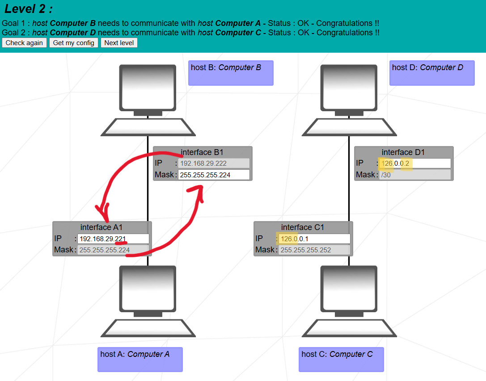

Goal: fix masks, avoid loopback, and place each pair of hosts in the same subnet.


Level 2 topology – /27 and /30 subnets with loopback issue.
1. What Level 2 teaches
This level introduces two subnet masks: /27 (255.255.255.224) and
/30 (255.255.255.252), and also shows that 127.x.x.x is
a loopback range and cannot be used as a real host IP.
Block size = 4
Only 2 usable hosts per block.
Chosen block: 126.0.0.0–3
Usable: 1, 2
We avoid loopback and pick a clean /30 subnet.
Simulator logs logs
forward way : B -> A
packet accepted → send to B1
A: packet accepted → destination reached
This confirms the pair is in the same subnet and reachable.
How to explain Level 2 in exam oral
“Left side uses mask /27 (255.255.255.224). B1 is in block 192–223, so I put A1 as
192.168.29.221 inside the same block. Right side uses /30; 127.x.x.x is loopback, so
I move both hosts into valid block 126.0.0.0/30 with usable hosts .1 and .2. Now both
pairs are in the same subnet and communicate.”